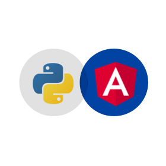

Aktuel Mein aktuelles Praxisprojekt, an den ich gerade arbeite ist verfügbar auf diesem
Github-Repository
Es geht um eine Webseite, die die Suche schneller mit weniger Informationen vom User ermöglicht.
Das Projekt wird realisiert mit Angular für Front-end und Python für Backend.
Auf diesem Projekt arbeite ich mehr im Front-End als im Backend
Mehr über das Projekt " Voice Queries in Product Search with Vague Conditions ", hier :http://www.is.informatik.uni-duisburg.de/courses/pg_2_ss19/index.html
Hier ist das Mockup des Projekts Bild oder pdf
Front-end : Angular
Html5, css3, javaScript, management of data from backend
Backend : Python
Elasticsearch und Kibana für die Visualisation von Daten Flask für die Verbindung zwischen Front-end und Backend
Musik-Player mit javaFx
Im Rahmen der Übung soll im Semester ein Musikplayer erstellt werden, der in der Lage, ist Lieder von der Festplatte ins Programm einzulesen, Lieder einer Playlist hinzuzufügen bzw. zu löschen und diese Playlist abzuspielen. Auÿerdem sollen Informationen Titel zu dem ausgewählten Lied angezeigt werden, und es soll möglich sein diese Informationen zu ändern.Kurzer Hinweis: Auf diesem Projekt wurde mehr Wert auf Funktionaliäten der Anwendung als das Aussehen :) gelegt
So sieht des Projekts Bild aus
Hier das Github-Repository
Github-Repository
-> Python ( nach Uni-exercises)
-> Angular ( Praxisprojekt )
-> Erstellung von Anzeigen in einer Datenbank (javaServlet,db2,html5 )